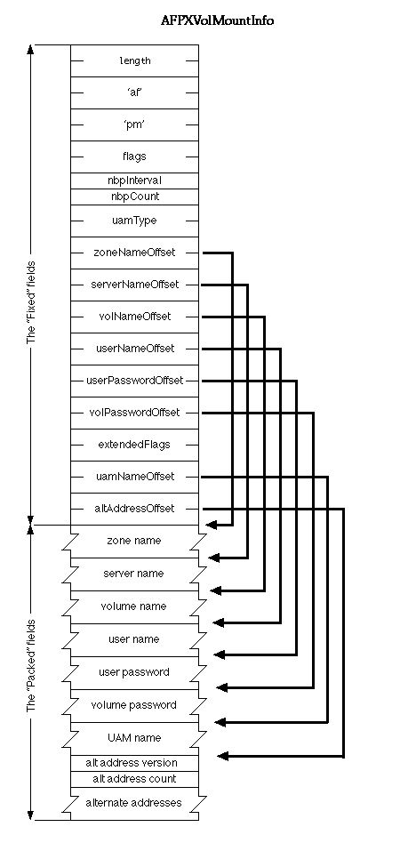

|
|
This Technote shows how to mount
an AppleShare volume using the PBVolumeMount call.
Updated: [Feb 06 1998]
|
Introduction
The AppleShare Client implements the PBVolumeMount trap to allow
developers to mount volumes programmatically. There are two ways to
use the PBVolumeMount call to mount volumes. There is new
functionality added to the PBVolumeMount call by AppleShare Client
3.7 that allows for mounting servers over TCP/IP as well as
AppleTalk.
The first method is best used when you are remounting a volume
that has been mounted by the user. Identify the volume that you wish
to remount and call GetVolMountInfoSize to get the size of the Vol
Mount Block that you will need to allocate. Allocate the memory for
the Vol Mount Block and call GetVolMountInfo to get the block filled
in. When you wish to remount the volume call PBVolumeMount with the
Vol Mount Block created earlier. You will need to store the password
separately as GetVolMountInfo will not return password information.
The Alias manager uses this method to mount server volumes from
aliases.
The second method entails creating your own Vol Mount Block,
filling in the fields yourself and calling PBVolumeMount. This method
gives great flexibility but is rather complex. I advise looking at
the code in the MoreFiles Sample Code. (see the
References section)
Snippet #1: Finding the version of the AppleShare
Client
const short kASver_3_5 = 1;
const short kASver_3_6 = 2;
const short kASver_3_6_1 = 3;
const short kASver_3_6_2 = 4;
const short kASver_3_6_3 = 5; // incld. 3.6.3, 3.6.4, 3.6.5
const short kASver_3_7 = 6; // incld. 3.7.1
const short kASver_3_7_2 = 7;
short ClientVersion(void)
{
long result;
OSError theError = noErr;
theError = Gestalt('afps',&result);
if(!theError)
{
return(result & 0x0000ffff);
}
return 0;
}
|
Back to top
AppleShare Clients 3.0 - 3.6.5
AppleShare clients prior to version 3.7 mount volumes over
AppleTalk only. The More Files sample code
has a good example of using the PBVolumeMount() call to mount a
volume given a server name and password. For maximum compatibility
set the UAMType field of the AFPVolMountInfo struct to 1 for
guest login or 3 for login using a password.
struct AFPVolMountInfo {
short length; /* length of location data (including self) */
VolumeType media; /* type of media */
short flags; /* bits for no messages, no reconnect */
SInt8 nbpInterval; /* NBP Interval parameter (IM2, p.322) */
SInt8 nbpCount; /* NBP Interval parameter (IM2, p.322) */
short uamType; /* User Authentication Method */
short zoneNameOffset; /* short positive offset from start of
struct to Zone Name */
short serverNameOffset; /* offset to pascal Server Name string */
short volNameOffset; /* offset to pascal Volume Name string */
short userNameOffset; /* offset to pascal User Name string */
short userPasswordOffset; /* offset to pascal User Password string */
short volPasswordOffset; /* offset to pascal Volume Password string */
char AFPData[176]; /* variable length data may follow */
};
typedef struct AFPVolMountInfo AFPVolMountInfo;
|
Back to top
AppleShare Client 3.7
AppleShare Client 3.7 has several new features dealing with volume
mounting:
PBVolumeMount with AFPXVolMountInfo
As you can see, the AFPXVolMountInfo structure is an
extension of the AFPVolMountInfo structure defined above.
The three new fields and two new flag bits allow the developer to
specify the information needed to support TCP/IP and UAMs. The 3.7
Client will also support the old AFPVolMountInfo struct.
From the latest Files.h:
/* AFPXVolMountInfo is the new AFP volume mount info record,
requires the 3.7 AppleShare Client */
struct AFPXVolMountInfo {
short length; /* length of location data (including self) */
VolumeType media; /* type of media */
short flags; /* bits for no messages, no reconnect */
SInt8 nbpInterval; /* NBP Interval parameter (IM2, p.322) */
SInt8 nbpCount; /* NBP Interval parameter (IM2, p.322) */
short uamType; /* User Authentication Method type */
short zoneNameOffset; /* short positive offset from start of struct
to Zone Name */
short serverNameOffset; /* offset to pascal Server Name string */
short volNameOffset; /* offset to pascal Volume Name string */
short userNameOffset; /* offset to pascal User Name string */
short userPasswordOffset; /* offset to pascal User Password string */
short volPasswordOffset; /* offset to pascal Volume Password string */
short extendedFlags; /* extended flags word */
short uamNameOffset; /* offset to a pascal UAM name string */
short alternateAddressOffset; /* offset to Alternate Addresses in tagged format */
char AFPData[176]; /* variable length data may follow */
};
typedef struct AFPXVolMountInfo AFPXVolMountInfo;
typedef AFPXVolMountInfo * AFPXVolMountInfoPtr;
/* volume mount flags */
enum {
volMountNoLoginMsgFlagBit = 0, /* Input to VolumeMount: If set, the file
system */
volMountNoLoginMsgFlagMask = 0x0001, /* should suppress any log-in message/greeting
dialog */
volMountExtendedFlagsBit = 7, /* Input to VolumeMount: If set, the mount
info is a */
volMountExtendedFlagsMask = 0x0080, /* AFPXVolMountInfo record for 3.7 AppleShare
Client */
volMountInteractBit = 15, /* Input to VolumeMount: If set, it's OK for
the file system */
volMountInteractMask = 0x8000, /* to perform user interaction to mount the
volume */
volMountChangedBit = 14, /* Output from VolumeMount: If set, the volume
was mounted, but */
volMountChangedMask = 0x4000, /* the volume mounting information record
needs to be updated. */
volMountFSReservedMask = 0x00FF, /* bits 0-7 are defined by each file system
for its own use */
volMountSysReservedMask = 0xFF00 /* bits 8-15 are reserved for Apple system use */
};
enum {
kAFPExtendedFlagsAlternateAddressMask = 1 /* bit in AFPXVolMountInfo.extendedFlags
that means alternateAddressOffset is used*/
};
|

In order to use the new features of the PBMountVolume trap you
must set the extendedFlagsBit in the flagsword of
the AFPXVolMountInfo structure, and use the new VMIB
definition. Each of the offset fields specifies a 16 bit offset from
the beginning of the struct to the data in question. To leave a
string field empty you need to have the offset "point" to an empty
string. You cannot just leave the offset = 0.
To have the AppleShare Client put up the login
dialog, set the volMountInteractBit in the flags
word. Make sure you have an A5 world and have initialized QuickDraw
and the DialogManager before making this call with the bit set. You
also must have this bit set if you are using a UAM other than the
standard Apple ones. AppleShare Client 3.7.2 and later: If you leave
the volume name blank in the AFPXVolMountInfo structure, the
Client will put up the volume select window, allowing the user to
choose which volumes to mount.
The uamNameOffset offset specifies an offset to a pascal string
denoting the User Authentication MOdule (UAM) to use for this
connection. You must also set the uamType field. The UAM name string
is explained below
The Alternate Address offset specifies an offset to a block of
tagged data, containing IP addresses. The Block begins with a version
byte and a count byte, followed by up to 255 tagged addresses,
see below for the format.
The current version byte is 0x00.
Connecting to an IP
address
To connect to a server over TCP/IP, you need to copy the IP
address into an address tag and put the address tag into the
Alternate Address field. A server name is still required, though it
is not currently used. If you also specify a zone name the Client
will fall back to AppleTalk if it cannot connect via TCP/IP, it will
set the volMountChangedBit in the flags word if it falls
back. An example Alternate Address field for address 128.0.10.1 would
look like this:
0x00 0x01 0x08 0x02 0x80 0x00 0x0A 0x01 0x02 0x24
The client would use this address to connect to the default AFP
over TCP/IP port 548 on the machine denoted by the address 128.0.10.1.
Tagged data for
Addresses.
The new tagged data format accommodates changes in address
formats, which will allow this client to support new addressing
standards such as IPv6 (IPNG) without changing the interface. The
first byte of the Alternate Address area is a version byte, currently
set to 0. It is followed by an AFPAlternateAddress structure (defined
below). The reason that the version byte is not included in the
AFPAlternateAddress structure is that the AFPAlternateAddress
structure is also used in the ServerInfo reply message in AFP 2.2.
Each Data Item consists of a length byte followed by a tagID byte
followed by up to 254 bytes of data. ie | len | tag | up to 254 bytes
of data |
The 3.7 Client understands the following tags:
|
Length
|
tagID
|
Description
|
|
0x06
|
0x01
|
Basic IP address; 4 bytes, no port number
|
|
0x08
|
0x02
|
IP address with Port; 4 bytes address, 2 bytes port
|
The length byte specifies the length of the whole tag, including
the length byte. All fields are in network byte order. (MSB first)
From the latest Files.h (which is a part of the Universal
Interfaces & Libraries v3.0.1):
enum { /* constants for use in AFPTagData.fType field*/
kAFPTagTypeIP = 0x01,
kAFPTagTypeIPPort = 0x02,
kAFPTagTypeDDP = 0x03 /* Currently unused*/
};
enum { /* constants for use in AFPTagData.fLength field*/
kAFPTagLengthIP = 0x06,
kAFPTagLengthIPPort = 0x08,
kAFPTagLengthDDP = 0x06
};
struct AFPTagData {
UInt8 fLength; /* length of this data tag including the fLength field */
UInt8 fType;
UInt8 fData[1]; /* variable length data */
};
typedef struct AFPTagData AFPTagData;
struct AFPAlternateAddress {
UInt8 fAddressCount;
UInt8 fAddressList[1]; /* actually variable length packed set of AFPTagData */
};
typedef struct AFPAlternateAddress AFPAlternateAddress;
|
Mounting
a Volume using a Custom UAM
A UAM is a code resource with a single entry point that takes a
selector. It lives in a file of type 'uams'. It is used to extend the
AppleShare Client, allowing it to connect to third party servers
using different authentication schemes. UAMs usually put up password
and volume select dialogs, and thus require that the
volMountInteractBit be set in the flags word of the
VolMountInfo block. UAMs are stored the "AppleShare Folder" at the
top level of the System folder.
To use a Third-Party UAM for authentication, use the new VMIB
definition (with the extendedFlagsBit set in the flags
word), put the UAM type from the 'uamg' id 0 resource (from the UAM
file) in the uamType field, and put the
UAM Name into the VMIB at the
uamNameOffset. Then call PBVolumeMount().
You must make sure that you have an A5 world and have called
InitGraf and InitDialogs, before making the PBVolumeMount call.
Third-Party UAMs are currently (AppleShare Client 3.7.2 and earlier)
limited to connecting over AppleTalk only.
UAMName
This is the AFP protocol name for the UAM, from the 'uamn' id 1
resource in the UAM file. It is a Pascal string.
|
Note:
All structures must be 68k aligned.
|
Back to top
Summary
The new PBVolumeMount interface gives the developer a great deal of
options in mounting AppleShare File Servers. PBVolumeMount can put up
login and volume select dialogs. It can use custom UAMs in the same
manner as the AppleShare Client when called through the Chooser. It
can connect to the server using AppleTalk or TCP/IP.
Back to top
References
MoreFiles Sample Code
Technote 1106: Borrowed AFP Sessions
AFP 2.2 specification (41K PDF).
Back to top
Downloadables
|

|
Acrobat version of this Note (260K).
|
Download
|
|